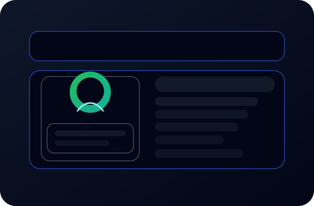

Precision-built roadmaps
Strategy that is ready to execute on day one
We leave behind aligned OKRs, delivery roles, risks, and the dashboards leadership needs so progress is visible and auditable.
We embed with leaders to simplify how work happens, align product and operations, and deploy practical digital capabilities so growth is planned, measurable, and repeatable.
2025 delivery model
Strategy + build + enablement in one blended team
Precision-built roadmaps
We leave behind aligned OKRs, delivery roles, risks, and the dashboards leadership needs so progress is visible and auditable.
Full-stack delivery
Product-minded operators, automation engineers, and change specialists working as one squad. Less handoff, more momentum.
Real adoption
Training, playbooks, and embedded champions keep changes alive. We measure adoption, not just outputs.
Loading dashboard data...
Note: For best experience, run a local server instead of opening the file directly.Fulfilr Consulting is a strategy and technology firm helping organizations turn complex challenges into streamlined, scalable solutions. We work where business strategy meets operational excellence and digital transformation, building systems that reduce friction and support sustainable growth.
Our work is grounded in a practical, collaborative approach. We take time to understand each client's environment, uncover operational gaps, and design solutions that drive measurable improvements in efficiency, performance, and customer experience.
Experienced operators driving real change

Founder & Principal Consultant
Former product leader at scale-ups, specializing in operational strategy and digital transformation.
Operations Specialist
Expert in process optimization and workflow design, with 8+ years in operations leadership.
Digital Solutions Lead
Full-stack developer and automation expert, building tools that teams actually use.
We're always looking for talented individuals who want to drive real change and build better systems.
Work on projects that directly improve how organizations operate and grow.
Access to cutting-edge tools, methodologies, and professional development.
Join a team that values diverse perspectives and hands-on problem solving.
"The best way to predict the future is to create it." — Peter Drucker
Flexible, practical services designed to help teams streamline operations, improve performance, and adopt modern digital capabilities at the pace that fits your business.
We work with leaders to define clear objectives, identify operational gaps, and build realistic strategies that connect vision to execution. Our advisory approach focuses on data-driven insights, prioritization, and helping organizations move forward with confidence, not complexity.
We map, analyze, and improve existing processes to reduce manual work, remove bottlenecks, and create smoother, more efficient workflows. Whether it is internal approvals, customer-facing operations, or cross-team coordination, we simplify how work gets done so teams can focus on what actually matters.
From low-code solutions to process automation and custom dashboards, we build lightweight digital tools that streamline daily operations. Our solutions help organizations reduce repetitive tasks, improve data visibility, and connect information across departments without needing a full engineering team.
New systems only work when people use them. We help teams adopt new processes and tools through clear training, hands-on support, and easy-to-understand documentation. Our change enablement approach ensures improvements stick and continue to deliver value long term.
Disciplined delivery keeps strategy, execution, and adoption woven together.
Map objectives to measurable levers, align sponsorship, and define what good looks like across teams.
Reframe workflows, attach data and automation, and prioritize the smallest set of changes with the biggest lift.
Create dashboards, integrations, and playbooks that ship into the live environment, not a slide deck.
Upskill teams, track adoption, and transition ownership with clear rituals and governance.
Real results from real partnerships
"Fulfilr transformed our operations completely. Their strategy implementation increased our efficiency by 35% in just three months. The team's expertise in digital tools is unmatched."Sarah Chen
"Working with Fulfilr was a game-changer for our patient management system. They not only delivered a robust solution but ensured our entire team was trained and confident in using it."Dr. Michael Rodriguez
"The ROI was evident from day one. Fulfilr's approach to process optimization saved us thousands in operational costs while improving customer satisfaction scores by 28%."Emily Watson
"Fulfilr's team brought fresh perspectives to our scaling challenges. Their blended approach of strategy and execution helped us launch our new product line 2 months ahead of schedule."James Park
"The change management support was exceptional. Fulfilr didn't just implement tools—they ensured adoption through training and follow-up that actually stuck."Lisa Thompson
We've partnered with forward-thinking organizations across various sectors.
Real projects, real impact
Helped a 200-person SaaS company redesign their customer onboarding process, resulting in 40% faster time-to-value and improved retention.
Built custom dashboards and automation tools for a regional healthcare network, reducing administrative overhead by 50%.
Optimized approval workflows and integrated financial tools, enabling the team to process transactions 3x faster.
Expert perspectives on strategy, operations, and digital transformation.
How to design processes that grow with your business without breaking under pressure.
Read more →A framework for deciding when custom solutions deliver better value than off-the-shelf software.
Read more →Creating sustainable adoption through embedded champions and measurable rituals.
Read more →Next quarter clarity
We will map the fastest path from strategy to pilot, with the dashboards leadership needs to see progress in real time.
Tell us a bit about what you are working on, and we will follow up with tailored recommendations to help you move forward with confidence.